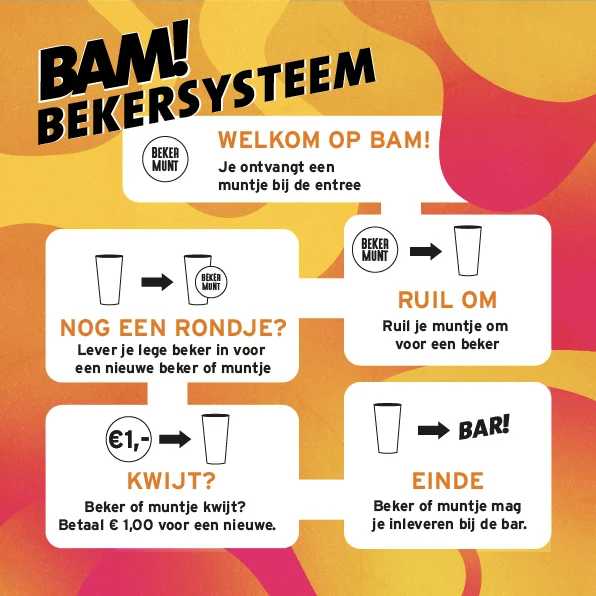

Inleiding
BAM! is een veelzijdig festival voor jong en oud. Van rock- tot popmuziek, van blues tot house, er is voor ieder wat wils! Muziek, theater en kunst worden op een unieke manier samengebracht en zorgen voor prachtige momenten. Hier alle Informatie!
Vele bekende artiesten zijn door de jaren heen bij ons te gast geweest. Denk aan Caro Emerald, Lucas Hamming, Wudstick, Diggy Dex and de CCR Revival band. Niet alleen bekende artiesten verdienen een plaatsje in de spotlight. Elk jaar bieden wij ook onbekende en internationaal talent het podium.
Maar BAM! is meer dan alleen muziek. Elk jaar wordt er een scala aan workshops gegeven, wordt er poëzie voorgedragen en zijn (lokale) kunstwerken te bewonderen. Voor de kleine BAM! bezoekers is er natuurlijk ook van alles te doen.
Met zo veel mooie en steengoede optredens, acts, kunst en cultuur is het moeilijk om te kiezen waar je speciaal voor komt, en dat hoeft gelukkig ook niet! Kom kijken en laat je verrassen door alles wat BAM! te bieden heeft.
Waar en wanneer is het BAM festival?
Het BAM! festival vindt plaats op zaterdag 20 mei 2023 op het Prins Bernardplantsoen in Hengelo. Op vrijdagavond 19 mei 2023 is er een gratis BAM! tribute night met diverse tributebands en een DJ in de tussenliggende pauzes.
Wat zijn de openingstijden?
Elk jaar begint het festival om 12:00 uur ’s middags en gaat het door tot 00:30 uur ’s avonds. Wil je daarna nog verder feesten? Het centrum van Hengelo en haar uitgaansgelegenheden liggen op loopafstand van het festivalterrein. Vrijdag zijn we open vanaf 18:00 uur tot 0:00 uur.
Hoe kan ik betalen?
Bij BAM! kan je alleen pinnen, drankjes en eten betaal je met de pinpas aan de bar. Contant geld meenemen is dus niet nodig.
Welke huisregels gelden er?
De meest belangrijke huisregels zijn de volgende:
- Jongeren onder de 16 jaar hebben alleen toegang tot concerten onder begeleiding van een volwassene;
- Alcohol wordt alleen aan bezoekers van 18 jaar of ouder geschonken. Bij twijfel kan naar je legitimatie worden gevraagd;
- Volg ten alle tijden de aanwijzingen van de medewerkers van het BAM! Festival en van de security op;
- Je dient je te kunnen legitimeren. Ook kun je ter controle gefouilleerd worden door de security. Je dient mee te werken en aanwijzingen op te volgen;
- Indien je je in het verleden misdragen hebt bij het BAM! Festival kan je de toegang worden geweigerd;
- Iedere vorm van geweld, (seksueel) intimiderend-, beledigend en/of discriminerend gedrag, is verboden;
- Je mag geen wapens mee naar binnen nemen en ook geen goederen die een gevaar voor de veiligheid op kunnen leveren;
- Het gebruiken van, en het handelen in hard- en softdrugs is verboden;
Wil je de volledige lijst met huisregels checken? Ga dan naar deze pagina. Heb je vragen over iets wat niet duidelijk is? Of heb je een vraag die niet beantwoord is na het lezen van de huisregels? Stel hem via de chat op Facebook!
Gevonden voorwerpen
Ik heb voorwerpen gevonden
Voorwerpen die je gevonden hebt kun je afgeven bij de informatiestand naast de ingang van het festival.
Ik ben iets kwijt geraakt
Na afloop van het festival zullen alle overgebleven gevonden spullen naar de gemeente worden gebracht. Meer info hier.
Tijdschema/Dagindeling?
Het blokkenschema wordt op een later moment bekend gemaakt en zal dan hier te vinden zijn als het zo ver is
Ticketprijzen
BAM! Festival is gratis! .. en zal altijd gratis blijven! Ook de vrijdagavond is gratis.
Bekers
BAM! Festival werkt met plastic spoelbekers, bij ingang krijgt elke bezoeker een muntje om een glas te "kopen", bij aanschaf van nieuwe consumpties kan men de glazen weer inleveren bij de bar. Deze zullen opnieuw gespoeld worden. Bekers zijn eigenaar van de brouwerij en mogen dus ook niet worden meegenomen bij het verlaten van het terrein.

Foto’s en Pers
Mag ik foto’s maken?
Bezoekers mogen foto’s maken, je leukste momenten wil je toch vastleggen? Neem vooral je (digitale) fototoestel, videocamera, GoPro of mobiel mee. Echter, (semi-)professionele camera’s zijn helaas niet toegestaan. Wil je op beroepsmatige wijze foto’s of opnames maken van het evenement? Vraag dan een persaccreditatie aan.
Hoe kan ik persaccreditatie aanvragen?
BAM! Festival heeft de mogelijkheid om een persaccreditatie aan te vragen. Deze kun je aanvragen door dit formulier in te vullen.
Parkeren en Route
Waar kan ik parkeren?
BAM! Festival wordt georganiseerd in het Prins Bernhardplantsoen. Dit ligt tegenover het NS-station en naast het busstation.
Auto
Er zijn drie parkeergarages die op loopafstand liggen van het festivalterrein. Deze zijn 24 uur per dag, 7 dagen in de week geopend.
Trein
BAM! is heel eenvoudig te bereiken met de trein, het ligt schuin tegenover het station van Hengelo. Loop de uitgang uit richting centrum, schuin oversteken en dan ben je er al, nog geen minuutje lopen!
Fiets
Er zijn genoeg plekken waar je een fiets neer kan zetten rond het BAM! festival, wil je liever een bewaakte fietsenstalling? Je kunt je fiets gratis stallen tot 16.00 uur in de fietsenstalling van parkeergarage De Beurs. Ook kunt je fiets in de overdekte fietsenstalling plaatsen bij het stationsplein.
Ik wil graag meehelpen, hoe kan dat?
Van organisatie tot barpersoneel, van opbouwers tot technici, dit festival wordt volledig georganiseerd door vrijwilligers. Daarom zijn we altijd blij als mensen een handje willen helpen!
Je kunt je hier opgeven om vrijwilliger te worden bij BAM! Festival door dit formulier in te vullen. Wil je op een andere manier helpen? Stuur een e-mail naar info@bamfestival.nl met wat tekst en uitleg, dan zorgen wij dat het bij de juiste persoon terecht komt.
Tot slot
Het Goed, HengeloAl jaren lang helpt Het Goed in Hengelo met beschikbaar stellen van meubelen voor onze backstage, waarvoor heel veel dank!